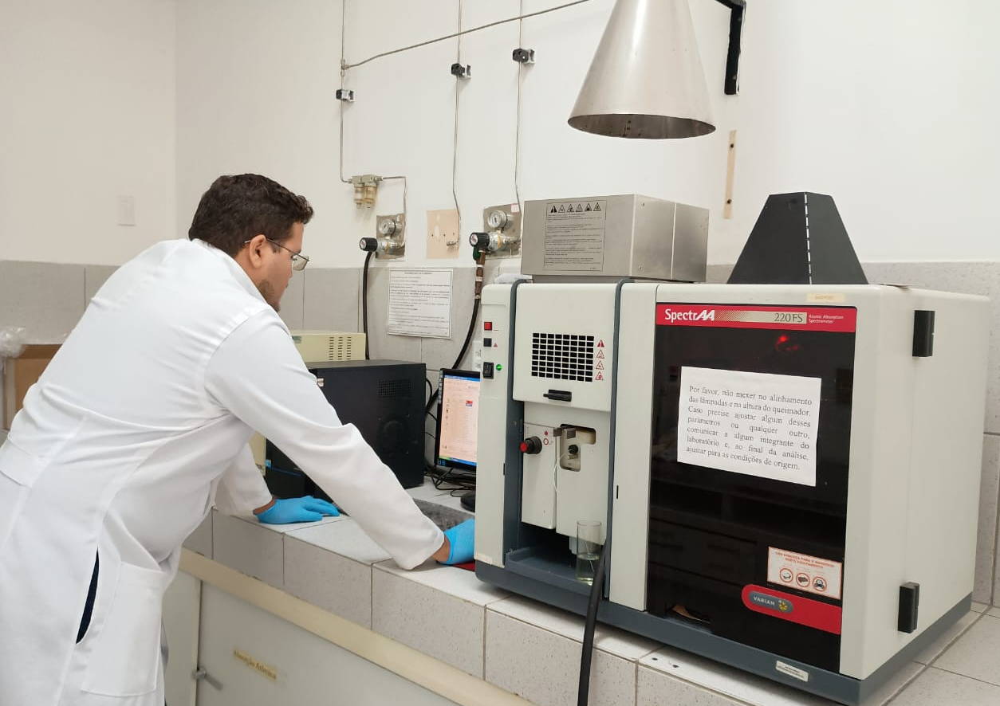

Análises químicas precisas para garantir a qualidade e segurança da água
+10 anos de experiência em análises de água, oferecendo soluções confiáveis e de alta precisão para monitoramento da qualidade e detecção de contaminantes em diferentes matrizes.
